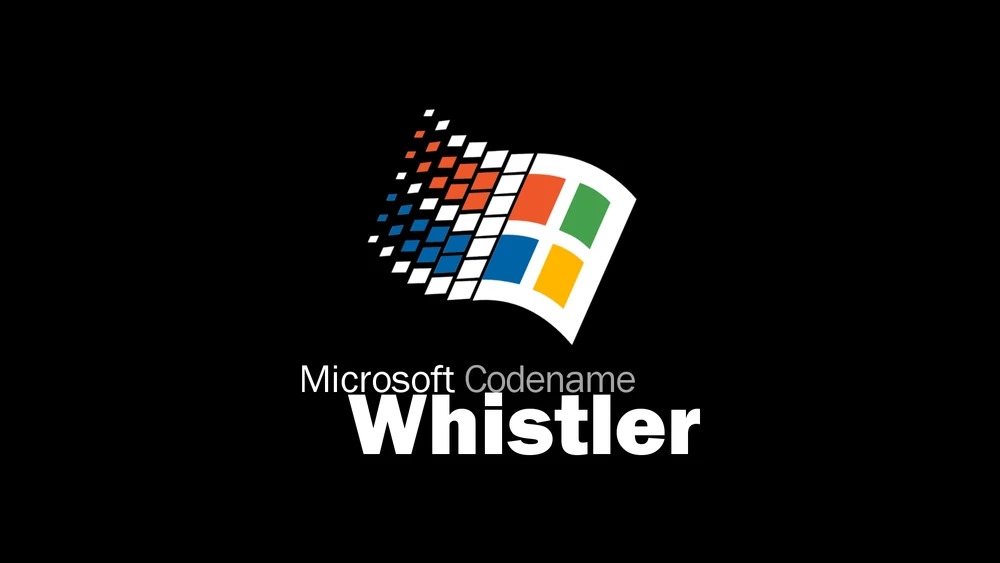

The development of Windows XP began in 1999, It was origionaly titled Windows Neptune,
however was later merged with another project callled Odyssey,
This was a operating system intended for the bussiness market.
The Merdged project was refered to as Project Whistler.
In Early 2001, Microsoft announces that Whistler was to be called Windows XP.
